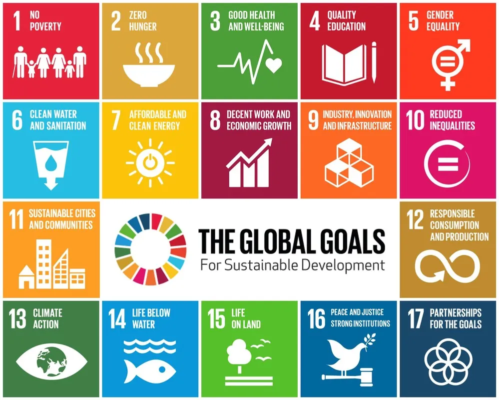

Pengertian SDGs
SDGs (Sustainable Development Goals) atau Tujuan Pembangunan Berkelanjutan
adalah 17 tujuan global yang disusun oleh PBB untuk menciptakan dunia yang
lebih baik pada tahun 2030. Tujuan ini mencakup masalah seperti kemiskinan,
pendidikan, lingkungan, hingga kerja sama antarnegara. SDGs dibuat agar
semua negara dapat bekerja bersama dan mengambil langkah nyata demi masa depan
yang lebih berkelanjutan.

Tujuan SDGs
Ada 17 SDGs yang meliputi berbagai bidang penting kehidupan. Beberapa di antaranya
adalah mengakhiri kemiskinan, memastikan pendidikan berkualitas, kesehatan yang layak,
kesetaraan gender, energi bersih, pekerjaan yang layak, inovasi industri, hingga menjaga
ekosistem laut dan darat. Setiap tujuan saling terhubung dan memiliki peran penting untuk
membangun dunia yang lebih maju dan adil.
Tujuan SDGs ke-17
Tujuan ke-17 adalah "Partnership for the Goals" atau Kerja Sama untuk Mencapai Tujuan.
SDGs ke-17 ini menekankan pentingnya kolaborasi antara negara, pemerintah, organisasi,
sektor swasta, dan masyarakat untuk mencapai seluruh target SDGs. Tanpa kerja sama,
tujuan-tujuan lain tidak akan tercapai secara maksimal, sehingga SDGs ke-17 menjadi
fondasi penting dari semua tujuan lainnya.